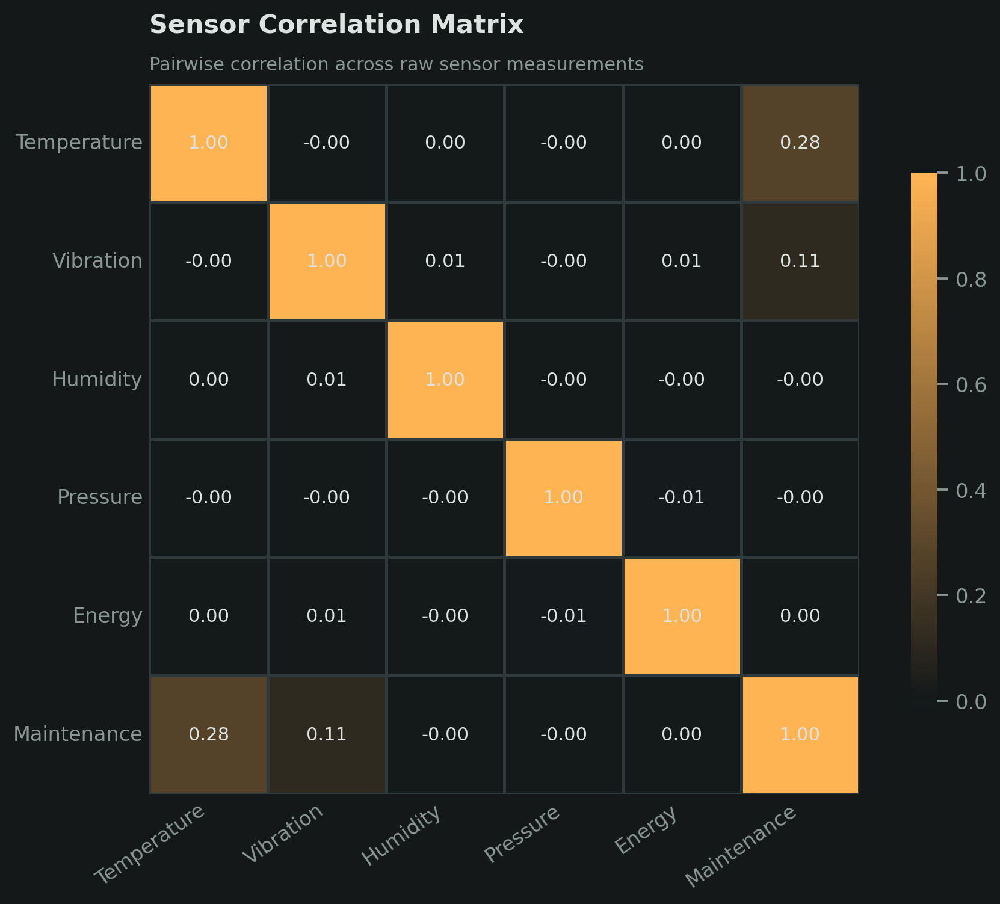
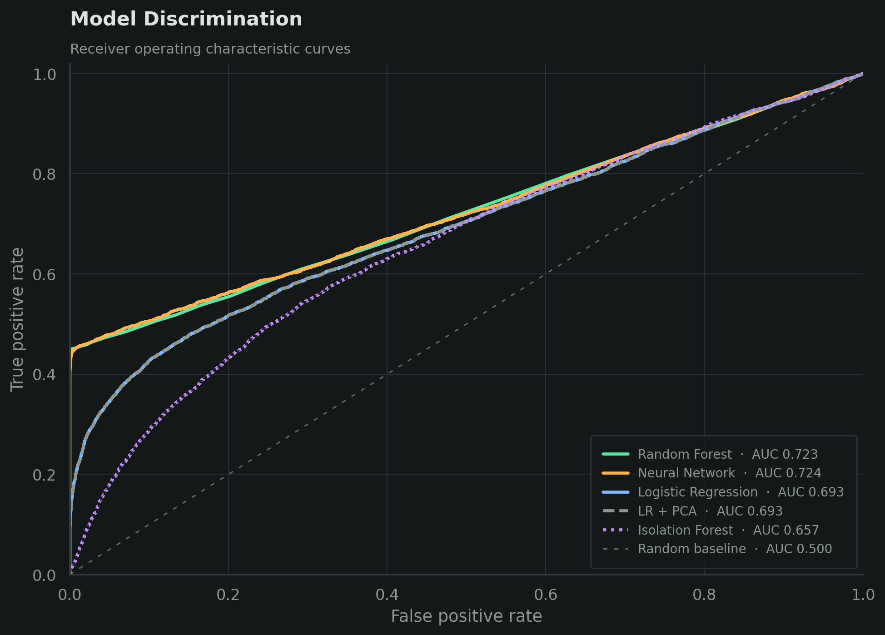

AI-Driven Predictive Maintenance System
A team project exploring how machine learning can use IoT sensor data to predict maintenance needs and identify abnormal equipment behaviour in a smart manufacturing setting.
Project Summary
- Built a reproducible notebook-to-LaTeX workflow.
- Compared five supervised, deep-learning, dimensionality-reduction, and anomaly-detection techniques.
- A predictive-maintenance study using 100,000 one-minute readings from 50 machines.
- Five raw sensor measurements used as model inputs.
- Random Forest led F1 at 0.619 with 99.9% precision.
- The neural network reached 0.606 F1 and the best ROC-AUC at 0.725.
Overview
For our MANU 465 final project, my team investigated predictive maintenance using the Smart Manufacturing IoT-Cloud Monitoring Dataset. The dataset contains 100,000 one-minute sensor readings from 50 machines, including temperature, vibration, humidity, pressure, and energy consumption. Our goal was to predict whether maintenance was required and to explore whether unusual machine behaviour could also be detected without labelled outcomes.
Because only 19.7% of the records required maintenance, we evaluated the models using precision, recall, F1-score, and ROC-AUC rather than relying on accuracy alone.
Approach
We removed identifiers and derived variables that could leak the answer, leaving only five raw sensor measurements. The data was split into stratified training and test sets, and scaling was fitted on the training data only. We then compared five techniques:

Reproducibility
I designed the project so the executed notebook serves as the single source of truth for both the analysis and the report. Running the notebook trains the models, exports the figures, and writes the latest numeric results as LaTeX commands to metrics.tex. The final report imports those commands instead of manually copying values, keeping its tables, discussion, and conclusions synchronized with the code.
Key Findings
The non-linear models performed best. Random Forest achieved the highest F1-score at 0.619 with 99.9% precision, while the neural network produced a comparable F1-score of 0.606 and the highest ROC-AUC at 0.725. Temperature and vibration were the most important predictors. PCA showed that all five sensors contributed distinct information, while Isolation Forest confirmed that anomaly detection could identify some useful structure without labels, although it trailed the supervised models.
The results also highlighted an operational trade-off: Logistic Regression detected more maintenance cases but generated many false alarms, while Random Forest was highly precise but missed more true cases. The appropriate model therefore depends on the relative cost of unnecessary inspections and unplanned downtime.

My Contribution
I was responsible for writing and finalizing the complete analysis code and producing the final LaTeX report. I built the end-to-end notebook workflow, implemented and evaluated the models, generated the final figures and metrics, and translated the results into the submitted written report. I also developed the reproducible notebook-to-LaTeX workflow so that rerunning the analysis automatically updates the results used by the report.
My teammates supported the project by completing the initial dataset-exploration deliverables and preparing the scripts used for our presentation.